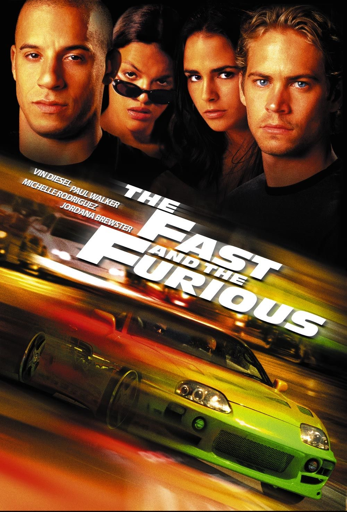

Resenha do Filme
“Velozes e Furiosos”, lançado em 2001, não é apenas um filme sobre carros. É um retrato de um universo onde a velocidade é a linguagem, e a lealdade vale mais do que qualquer corrida. Dirigido por Rob Cohen, o longa marcou o início de uma das franquias mais populares do cinema, mas começou de forma muito mais íntima e crua do que as explosões e superproduções que vieram depois. A trama gira em torno de Brian O’Conner (Paul Walker), um policial infiltrado no mundo das corridas de rua em Los Angeles. Sua missão é descobrir quem está por trás de uma série de assaltos a caminhões. Mas o plano muda quando ele se aproxima de Dominic Toretto (Vin Diesel), o carismático líder de um grupo de corredores que vive intensamente entre motores, família e segredos. O que torna esse primeiro filme tão cativante é justamente o equilíbrio entre ação e emoção. As cenas de corrida são eletrizantes, mas é nas relações entre os personagens que o filme realmente acelera. Brian se vê dividido entre seu dever e a lealdade que começa a sentir por Dom e sua “família”. Esse conflito interno traz humanidade à trama, algo que prende o espectador do começo ao fim. A química entre Paul Walker e Vin Diesel é natural, quase como se ambos já compartilhassem anos de amizade. A presença de Michelle Rodriguez como Letty e Jordana Brewster como Mia também dá mais profundidade ao elenco, mostrando que, por trás da adrenalina, há histórias de amor, confiança e sacrifício. “Velozes e Furiosos” não tenta ser mais do que é — e talvez seja isso que o torne tão bom. É um filme honesto, direto, com personalidade. Ele nos convida para um mundo underground, onde os carros falam alto, mas onde o coração ainda tem lugar. Mais do que um filme sobre rachas, é um filme sobre escolhas. Sobre família — não a de sangue, mas a que a vida coloca no nosso caminho. E foi esse espírito que fez com que essa história simples se transformasse em uma das maiores franquias da história do cinema.
Trailer Oficial
Elenco Principal
- Paul Walker – Brian O'Conner
- Vin Diesel – Dominic Toretto
- Michelle Rodriguez – Letty
- Jordana Brewster – Mia Toretto
Homenagem a Paul Walker
Há pessoas que passam por este mundo como um cometa: intensas, brilhantes, deixando um rastro de luz por onde passam. Paul Walker foi uma dessas almas raras. Mais do que um ator conhecido pelas cenas de ação e pela velocidade nas telas, Paul era alguém que carregava consigo uma bondade autêntica, daquelas que não se ensina — se sente. Sua presença ia além do cinema. Tinha um jeito simples de viver, um sorriso que desarmava qualquer um, e uma paixão verdadeira pelos carros, pela natureza, pelas pessoas. Ficou mundialmente conhecido como Brian O’Conner na franquia Velozes e Furiosos, mas fora das câmeras era apenas Paul: amigo leal, pai amoroso, aventureiro incansável e um ser humano generoso. Enquanto muitos buscavam fama, ele buscava fazer a diferença. Com sua ONG Reach Out Worldwide, Paul esteve presente em momentos difíceis, levando ajuda a quem mais precisava, sem esperar reconhecimento — apenas movido pelo coração. Sua partida tão repentina deixou um silêncio profundo no mundo do cinema e nos corações de milhões de fãs. Mas seu legado não acabou. Continua vivo em cada cena que assistimos, em cada gesto de solidariedade que ele inspirou, em cada lembrança guardada com carinho. Paul Walker nos ensinou a viver com intensidade, a valorizar o que realmente importa e a nunca esquecer quem somos, por mais longe que a estrada nos leve. Hoje, ele corre em outro plano, mas sua história continua acelerando dentro de nós. Descanse em paz, Paul. Você nunca será esquecido.
"Se um dia a velocidade me matar, não chore, eu estarei sorrindo." -Paul Walker